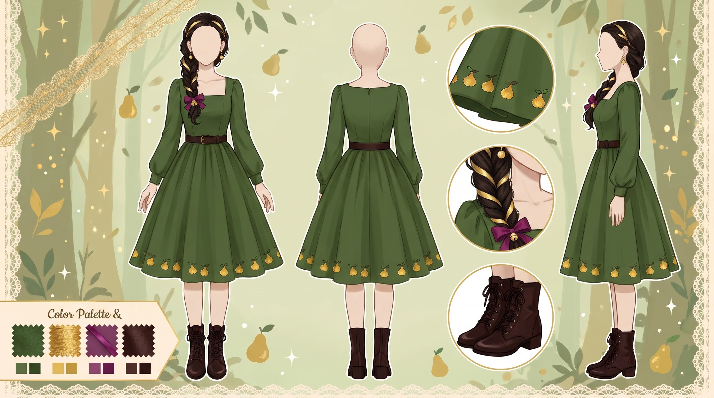
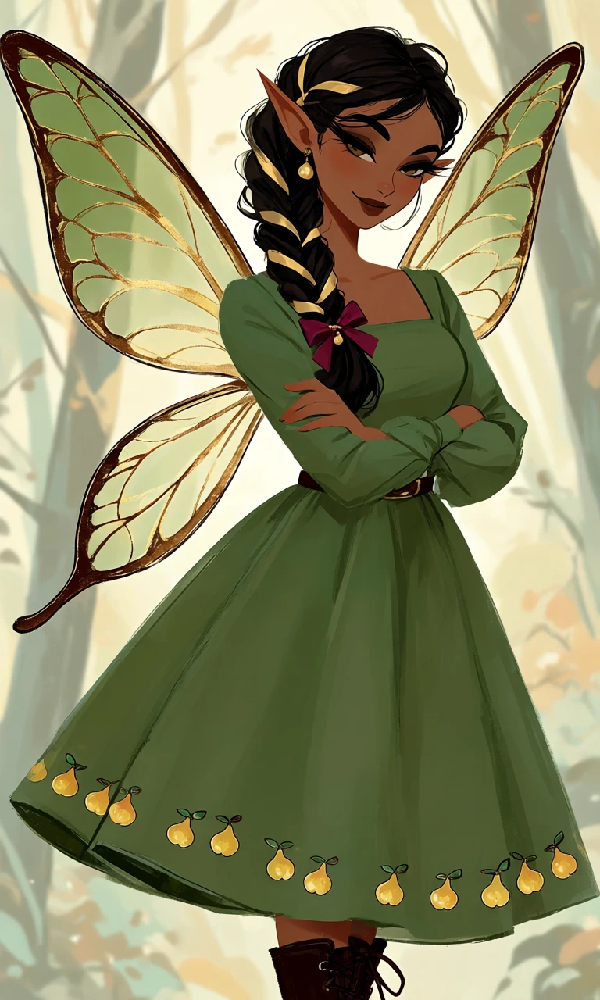

The Gilded Pear Dress

Outfit Prompt
She wears a fitted moss-green dress with a square neckline, long sleeves gathered at the wrists, and a calf-length A-line skirt embroidered with tiny golden pears along the hem. A slim chestnut belt and dark brown lace-up ankle boots complete the outfit. Her braid is threaded with muted gold ribbon, finished with a burgundy satin bow and a tiny brass pear charm.
Outfit Examples

